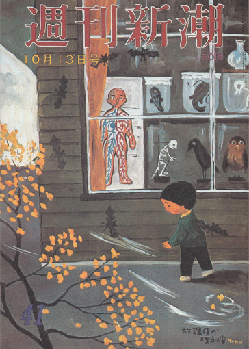
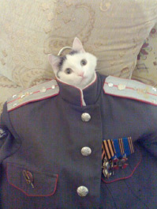
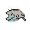
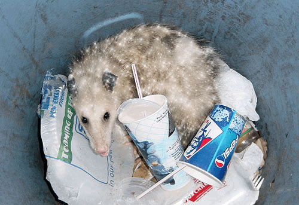

Когда писатель принимается за труд воссоединения, творческий опыт говорит ему, чего избегать во время приступов той слепоты, которая нападает даже на самых великих, когда бородавчатая жирная нежить условностей или склизкие бесенята по имени «текстовые затычки» карабкаются по ножкам письменного стола. Пылкий «восторг» выполнил свое задание, и холодное «вдохновение» надевает строгие очки. Страницы еще пусты, но странным образом ясно, что все слова уже написаны невидимыми чернилами и только молят о зримости. Можно по желанию развертывать любую часть картины, так как идея последовательности не имеет значения, когда речь идет о писателе. Последовательность возникает лишь потому, что слова приходится писать одно за другим на одна за другой идущих страницах, как и читательскому уму требуется время, чтобы прочесть книгу, по крайней мере в первый раз. Ни времени, ни последовательности нет места в воображении автора, поскольку исходное озарение не подчинялось стихиям ни времени, ни пространства.
Будь ум устроен по нашему усмотрению и читайся книга так же, как охватывается взглядом картина, то есть без тягостного продвижения слева направо
и без нелепости начал и концов, это и было бы идеальное прочтение романа,
ибо таким он явился автору в минуту замысла.


И вот он готов его написать. Он полностью снаряжен. Вечное перо залито чернилами, в доме тихо, табак рядом со спичками, ночь еще молода… и в этом приятном положении мы его и покинем, осторожно выскользнем, прикроем дверь и решительно столкнем с крыльца зловещего монстра здравого смысла, который топает по ступеням, готовясь скулить, что книгу не поймет широкая публика, что книгу ни за что не удастся — и как раз перед тем, как он выдохнет слово П, Р, О, Д, А, Т, Мягкий Знак, нужно выстрелить здравому смыслу в самое сердце.

